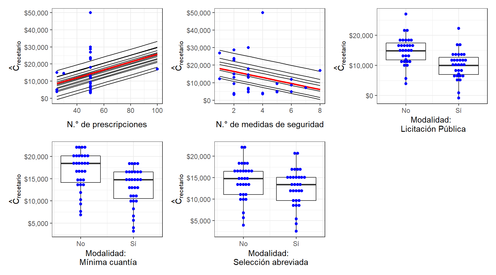

5.2 Costos de recetarios
5.2.1 Comparación de costos y precios de ventas de recetarios
Dentro del estudio de costos realizado se comparó el costo de compra del recetario contra su precio de venta. Así pues, se determinó que dentro del territorio el costo de los recetarios ronda entre los 10.000 COP y los 20.000 COP, con territorios como Valle del Cauca y Casanare, en donde dicho costo se aproxima a 30.000 COP. En algunos departamentos no se conocen los costos de adquisición de recetarios (Figura 5.3A), dada sus particularidades en la contratación, puesto que se encargan del proceso de licitación y contratación de recetarios, únicamente realizan estudios de necesidad que son enviados al ente encargado de concretar la contratación, en muchos casos, la gobernación departamental.
Figura 5.3: Comparativo de costo vs precio de recetarios por departamento. (A) Costos de adquisición de recetarios por departamento. (B) Precios de recetarios por departamento.

Por otro lado, el precio de venta de los recetarios tiende a rondar los 30.000 COP, ya que en algunos FRE por acto administrativo se ha establecido la tarifa del recetario con base en el salario mínimo diario legal vigente (Figura 5.3B) que se ajusta cada año. Así mismo, se observa correlación entre los departamentos con costo de recetario más alto y precio de venta mayor, como se da en Valle del Cauca, Bolívar y Casanare.
Ahora bien, el margen de ganancias que deja la venta de recetarios se observa en la Figura 5.4, en donde se puede establecer que con mayor frecuencia los entes territoriales obtienen entre 100 y 200% de ganancia sobre el costo del recetario. No obstante, los FRE de La Guajira y Nariño, poseen ganancias entre 800 y 900% en la venta de sus recetarios oficiales. En los FRE de Córdoba, Vichada y Guainía no se registran márgenes de ganancia para la venta de recetarios oficiales dado que no se tiene conocimiento en dichos territorios del costo de adquisición de recetarios puesto que son los entes gubernamentales del departamento los encargados de la contratación, proceso en el que el ente territorial no interviene.
Figura 5.4: Márgen de ganancia por recetario. (A) Frecuencia de departamentos por márgen de ganancia. (B) Márgen de ganancia de recetarios por departamento.

Los amplios márgenes de ganancia y las proporciones distintas entre unos FRE y otros, se podrían relacionar con: (a) cantidad de medidas de seguridad del recetario, (b) facilidad de acceso del departamento, (c) número de prescripciones, (d) tipo de licitación o (e) cantidad de empresas oferentes en los concursos de licitación de recetarios.
5.2.2 Factores que afectan el costo de adquisición de recetarios
Dentro de los procesos que se utilizan para la licitación y contratación de recetarios oficiales en el país, se consideran 4 modalidades de selección principalmente:
Licitación pública, el cual es un proceso de selección utilizado por las entidades estatales mediante el cual escoge a sus contratistas a través de una invitación de carácter público que se dirige a todas las personas potencialmente interesadas en ejecutar un contrato, para que en igualdad de condiciones y bajo criterios objetivos garantizados por el pliego de condiciones, presenten ofertas entre las que se escogerá la más favorable14.
Selección abreviada, modalidad de selección objetiva prevista en aquellos casos en que por las características del objeto a contratar, las circunstancias de la contratación o la cuantía o destinación del bien, obra o servicio, puedan adelantarse procesos simplificados (uso de subastas a la inversa, bolsas de productos o compras por catálogo) para garantizar la eficacia de la gestión contractual14.
Contratación directa, que es de carácter excepcional, por lo que su aplicación es de carácter restrictivo. En efecto, la ley de Contratación Pública en Colombia, prevé los siguientes eventos en los cuales es procedente esta modalidad de contratación: casos de urgencia manifiesta, contratación de empréstitos, cuando no exista pluralidad de oferentes en el mercado, para los contratos de desarrollo de actividades científicas y tecnológicas, entre otros14.
Mínima cuantía, que es un procedimiento sencillo y rápido para escoger al contratista en la adquisición de los bienes, obras y servicios cuyo valor no exceda el diez por ciento (10%) de la menor cuantía de las Entidades Estatales, modalidad de selección que tiene menos formalidades que las demás15.
Se realizó una exploración de los factores que pueden afectar el costo de los recetarios mediante un análisis de regresión lineal múltiple, para lo cual se tomó el costo de los recetarios como variable dependiente, y se tuvieron las siguientes variables como variable independientes (regresores):
número de prescripciones en el recetario (variable continua).
número de medidas de seguridad implementadas en el recetario (variable continua).
modalidad de selección de oferentes en la contratación (variable categórica con cuatro niveles mencionadas previamente)
| Parámetro | Estimado | Error Estándar | Valor t | Pr(>|t|) |
|---|---|---|---|---|
| Intercepto | 12181.9 | 12799.4 | 0.952 | 0.352 |
| N.° de prescripciones | 228.1 | 177.8 | 1.283 | 0.213 |
| N.° de medidas | -1712.0 | 1578.6 | -1.085 | 0.290 |
| Modalidad - Licitación pública | -4760.7 | 12064.4 | -0.395 | 0.697 |
| Modalidad - Mínima Cuantía | -3656.2 | 8269.9 | -0.442 | 0.663 |
| Modalidad - Selección abreviada | -1414.0 | 14418.9 | -0.098 | 0.923 |
En la Tabla 5.1 se muestran los resultados de la regresión lineal múltiple, la modalidad de selección se incluyeron como variables comodín (dummies) teniendo en cuenta como referencia a la contratación directa. El modelo generado presenta una bondad de ajuste baja (\(R^{2} = -0.064\)), y no se logra demostrar un efecto significativo de los factores explorados, pese a esto se presentan tendencias en estos factores.
En la Figura 5.5 se muestran gráficos de dependencia parcial de los factores explorados, se observan tendencias como que el N.° de prescripciones elevan el costo de los recetarios. Pese a que se podría suponer que al aumentar el número de características de seguridad en el recetario se aumentaría el costo de este, se encuentra una relación inversa entre el número de medidas y el costo de adquisición. Esto podría deberse a la facilidad de elaboración en departamentos con la capacidad tecnológica adecuada, la forma en que se adjudican los contratos y los diferentes oferentes en el concurso de contratación.
Figura 5.5: Gráficos de dependencia parcial - Modelo de costos de recetarios.
De esta forma, el tipo de contratación que se concreta con las empresas fabricante de los recetarios es una variable que influye en el costo de los recetarios, así pues, las modalidades de contratación por licitación pública, mínima cuantía y selección abreviada tienden a disminuir el costo del recetario en comparación con la modalidad de contratación directa, factor esperado ya que al no haber competencia entre empresas oferentes, quien posee el monopolio de fabricación es libre de disponer los precios de venta a las entidades territoriales.
Por otra parte, los FRE que concretaron órdenes de compra de recetarios por mínima cuantía y selección abreviada, tienden a presentar precios mayores de adquisición, con costo alrededor de los 10.000 COP y 15.000 COP, mientras que, los entes territoriales que optaron por la modalidad de licitación pública tienden a ser los recetarios más económicos en relación con las demás, con costos inferiores a los 10.000 COP por recetario en promedio.
5.2.3 Precio de venta de recetario por prescripción
Finalmente, se concluye que el precio por prescripción de los recetarios oficiales circulantes a nivel nacional como variante ponderadora el precio de venta y la cantidad de prescripciones por recetario, en donde se puede evidenciar la tendencia de los FRE hacia 250 COP a 500 COP por prescripción (Figura 5.6).
Figura 5.6: Precio de venta de recetario por prescripción.

El valor por prescripción más alto a nivel nacional se presenta en el departamento de Casanare, pese a que este recetario cuenta con 50 prescripciones como la mayoría de los FRE, su precio de venta es de 76.500 COP, el más alto del país, y del que no se tiene un acto administrativo donde se establezca su valor. Además de ello, cuenta con 3 medidas de seguridad, lo que consolida la hipótesis que se observa a nivel nacional que indica que, a menor número de medidas de seguridad, mayor es el costo del recetario.
El precio de venta por prescripción podría incrementar los costos a los que se venden los MME a los pacientes en los puntos de dispensación.